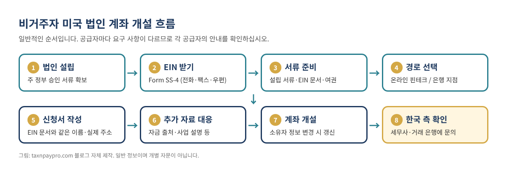
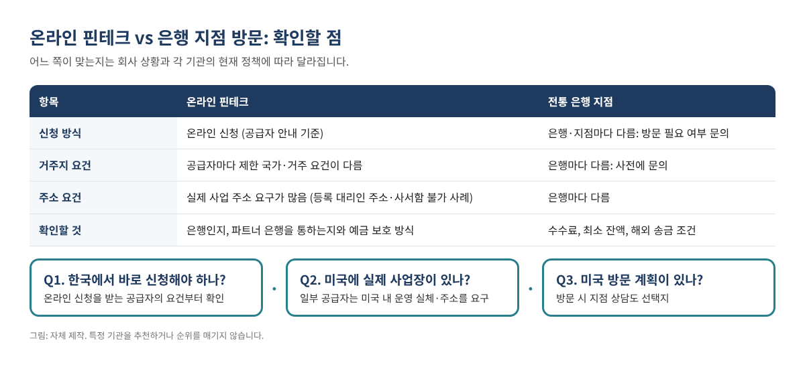
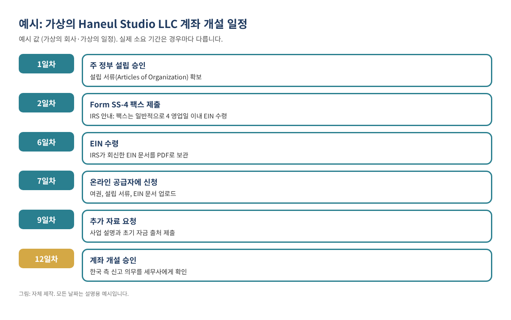

비거주자 미국 법인 은행 계좌 개설: 온라인 핀테크 vs 지점 방문, 필요 서류와 거절되는 이유
미국 LLC나 법인을 세운 뒤 가장 먼저 부딪히는 문제는 은행 계좌입니다. 설립 서류와 EIN이 있어도 신청이 보류되거나 거절될 수 있습니다. 그 이유 가운데 상당수는 서류의 이름이 서로 맞지 않거나, 주소가 공급자의 기준에 맞지 않거나, 소유자의 거주 국가가 공급자의 지원 범위 밖인 경우처럼 미리 확인할 수 있는 이유입니다. 이 글은 한국에 거주하면서 미국 회사를 운영하는 분이 계좌를 준비할 때 확인할 순서와 서류, 그리고 공급자들이 스스로 공개한 요건을 정리합니다.
이 글은 일반적인 교육용 정보이며 세무·법률·금융 자문이 아닙니다. 규정과 공급자 정책은 자주 바뀌므로 공식 안내를 확인하십시오.
이런 분께 필요합니다
☐ 한국에 살면서 미국 LLC 또는 C-Corp을 세웠거나 세울 예정인 분
☐ SSN이나 ITIN 없이 회사 명의 미국 계좌를 열려는 분
☐ 온라인 핀테크와 은행 지점 중 어느 경로를 알아볼지 정리하려는 분
☐ 한국에 있는 가족이나 지인의 미국 법인 계좌 준비를 돕는 재미교포
왜 은행은 소유자를 꼼꼼히 확인할까
미국 금융기관은 법인 고객의 계좌를 열 때 실제 소유자를 확인해야 합니다. FinCEN의 고객 실사(CDD) 규정 안내에 따르면, 금융기관은 법인 지분을 직접 또는 간접으로 25% 이상 가진 개인과, 회사를 실질적으로 관리하는 개인 한 명을 확인합니다. 외국인 소유자는 여권 번호 같은 식별 번호를 제출하며, 명의만 빌려주는 대리 소유자(nominee)는 인정되지 않습니다.
이 규정은 바뀌는 중입니다. FinCEN은 2026년 2월 13일 계좌를 새로 열 때마다 소유자를 다시 확인하지 않아도 되도록 하는 예외 명령을 냈고, 2026년 11월 17일에는 고객 실사 규정을 고치는 개정안을 공고했습니다(의견 수렴 단계). 실제 절차는 각 금융기관이 정하므로 신청할 때의 안내를 따르십시오.
BOI 보고 면제와 은행 확인은 별개입니다. FinCEN의 BOI 안내 페이지는 현재 미국에서 설립된 회사는 BOI 보고가 면제되고, 외국에서 설립된 뒤 미국 주에 등록한 회사가 보고 대상이라고 설명합니다. 그러나 이것은 FinCEN에 제출하는 보고에 관한 것이며, 은행과 핀테크가 계좌 개설 때 소유자 정보를 요구하는 절차는 그대로 적용됩니다.

1단계: 신청 전에 서류부터 맞추기
공급자들이 공개한 안내를 보면 요구 서류는 대체로 비슷합니다. 아래 표는 그 공통 항목을 정리한 것이며, 공급자마다 추가로 요구하는 자료가 있을 수 있습니다.
| 서류 | 왜 필요한가 | 공급자 안내 예 |
|---|---|---|
| 주 정부가 접수한 설립 서류 (Articles of Organization, Certificate of Formation 등) | 회사가 실제로 등록되었음을 확인 | Mercury, Relay, Airwallex (주에 따라) |
| IRS가 발급한 EIN 문서 (CP 575, 147C 등) | 회사 이름과 EIN이 일치하는지 확인 | Mercury, Relay, Wise |
| 소유자·관리자 신분증 (비미국인은 여권) | 25% 이상 소유자와 관리자 한 명 확인 | Mercury, Relay, Wise, Airwallex |
| 실제 사업 주소 | 등록 대리인 주소·사서함은 받지 않는 공급자가 많음 | Mercury, Relay, Wise |
| 사업 설명·초기 자금 출처 | 자금 흐름과 업종 확인 | Relay (사업 설명은 모든 신청자, 초기 자금 출처는 비미국인 소유자) |
EIN은 Form SS-4로 받습니다
미국 내 거주지나 주된 사업장이 없는 신청자는 온라인으로 EIN을 받을 수 없습니다. IRS의 Form SS-4 안내서(2025년 12월 개정판)는 다음 세 가지 방법을 제시합니다. SS-4의 7b란에는 SSN이나 ITIN이 없고 받을 자격도 없는 경우 "foreign" 또는 N/A라고 적도록 안내합니다.
| 방법 | IRS 안내 내용 | 받는 시점 |
|---|---|---|
| 전화 (해외 신청자만) | 267-941-1099, 수신자 부담 아님, 미 동부시간 월~금 오전 6시~오후 11시 | 통화 중 안내 |
| 팩스 | 미국 밖에서는 304-707-9471, 미국 안에서는 855-215-1627 (24시간) | 일반적으로 4 영업일 이내 |
| 우편 | Internal Revenue Service, Attn: EIN International Operation, Cincinnati, OH 45999 | 약 4주 (필요일보다 4~5주 앞서 제출 권장) |
EIN 신청 절차와 CP 575·147C 문서에 대한 자세한 내용은 이 시리즈의 다음 글에서 다룹니다. 계좌 신청에는 신청서 사본이 아니라 IRS가 발급하거나 회신한 문서가 필요하다는 점을 기억하십시오. 예를 들어 Mercury는 SS-4를 낼 경우 IRS가 회신한 버전을 내라고 안내합니다.
2단계: 온라인 핀테크와 지점 방문 비교하기
한국에 거주하는 경우 일반적으로 온라인 신청을 받는 핀테크 공급자부터 요건을 확인하게 됩니다. 다만 일부 공급자는 미국 내 운영 실체와 미국 주소를 요구하므로, 온라인이라고 해서 모두 신청할 수 있는 것은 아닙니다. 미국 방문 계획이 있다면 전통 은행 지점에 직접 문의하는 방법도 있습니다. 전통 은행은 은행과 지점마다 정책이 다르므로, 방문 전에 비거주자 소유 법인의 계좌 개설이 가능한지, 어떤 서류가 필요한지 물어보는 것이 좋습니다.
| 확인 항목 | 온라인 핀테크 | 전통 은행 지점 |
|---|---|---|
| 신청 방식 | 온라인 신청 (공급자 안내 기준) | 은행·지점마다 다름 |
| 거주 국가 제한 | 공급자마다 제한 목록이 있음 | 은행에 사전 문의 |
| 주소 요건 | 실제 사업 주소 요구가 많음 | 은행에 사전 문의 |
| 함께 볼 것 | 은행인지, 파트너 은행을 통하는지와 예금 보호 방식 | 수수료, 최소 잔액, 해외 송금 조건 |

3단계: 공급자가 공개한 요건 확인하기
아래는 각 공급자가 자기 도움말 페이지에 공개한 내용을 요약한 것입니다. 알파벳 순서이며 추천이나 순위가 아닙니다. 공급자 정책은 자주 바뀌므로 신청 직전에 다시 확인하십시오. (확인일 2026-11-21)
| 공급자 | 공개된 주요 요건 (요약) |
|---|---|
| Airwallex | 지원 국가에 등록된 사업체만 가능. 미국 회사는 주에 따라 주 정부 설립 서류를 요구할 수 있고, EIN 문서를 요청할 수 있음(회사 이름 일치 필요). 신청자는 신분증 사진과 셀피로 본인 확인, 25% 이상 소유자 등 다른 사람도 본인 확인을 요청받을 수 있음. |
| Mercury | 미국 또는 미국령에서 설립된 회사. 미국 시민이나 거주자가 아니어도 신청 가능. 설립자의 거주 국가 기준 제한 목록이 있음(확인일 기준 한국은 목록에 없음). 실제 사업 주소 필요, 등록 대리인 주소·사서함·UPS Store 주소 불가. 해외 신청자는 여권. |
| Relay | 비미국인이 소유한 미국 회사도 받지만 미국 내 운영 실체가 있어야 함. 회사와 실소유자 모두 미국 실제 주소 필요(사서함·가상 우편함 불가). 비미국인 소유자는 초기 자금 출처 등 추가 정보 제출. |
| Wise | EIN 필요. 25% 이상 소유자와 관리자 정보 제출, 미국 밖 소유자는 사진 신분증. 영업 주소는 실제 장소여야 하며 사서함·등록 대행 주소·우편 전달 주소 불가. 네바다 사업체는 받을 수 없다고 안내. |
주소 요건을 맞추려고 실제와 다른 주소를 적지 마십시오. 공급자들이 실제 사업 주소를 요구하는 것은 회사가 어디서 운영되는지 확인하기 위해서입니다. 사실과 다른 주소나 사업 내용을 적으면 거절이나 계좌 해지로 이어질 수 있고, 금융기관의 고객 확인 절차를 속이는 행위가 될 수 있습니다. 요건이 맞지 않는 공급자라면 다른 경로를 알아보는 것이 맞습니다.
4단계: 신청서를 일관되게 작성하기
- 회사 이름은 EIN 문서에 적힌 그대로 입력합니다. Airwallex와 Wise는 EIN 문서의 이름이 신청서와 맞아야 한다고 안내합니다.
- 주소는 실제로 사업이 이루어지는 곳을 적습니다. Mercury는 주된 사업장이 미국 밖 주소여도 된다고 안내하지만, Relay와 Wise는 다른 기준을 둡니다.
- 25% 이상 소유자와 관리자 한 명의 정보를 빠짐없이 적습니다.
- 업종과 사업 내용을 구체적으로 설명합니다. 공급자마다 받지 않는 업종이 있습니다(예: Mercury는 송금업(MSB)과 암호화폐 거래소, 성인 엔터테인먼트, 대마, 인터넷 도박, 신탁을 지원하지 않는다고 안내).
- 추가 자료 요청에는 기한 안에 답합니다. 초기 자금 출처, 거래처, 예상 거래 규모 등을 물을 수 있습니다.
예시: 가상의 Haneul Studio LLC
서울에 사는 디자이너 김하늘(가명)이 단독 소유 LLC인 Haneul Studio LLC(가상의 회사)를 세우고 미국 고객에게 온라인 디자인 용역을 제공하려는 경우를 가정합니다. 아래 날짜와 금액은 모두 설명을 위한 예시 값입니다.
| 예시 값 (Sample values) | 내용 |
|---|---|
| 소유 구조 | 김하늘 100% (단독 소유 LLC) |
| 사업 내용 | 미국 고객 대상 온라인 디자인 용역 |
| 사업 주소 | 실제로 일하는 서울 사무실 주소 |
| 예상 첫해 매출 | $60,000 (예시) |
| 초기 입금 자금 | $5,000, 본인 저축에서 송금 (예시) |
김하늘은 2일차에 SS-4를 팩스로 보내고 6일차에 EIN을 받았습니다. 7일차에 주소 요건이 자신의 상황(서울 사무실)과 맞는 공급자를 골라 신청했고, 9일차에 사업 설명과 초기 자금 출처를 추가로 요청받아 제출했습니다. 12일차에 계좌가 승인되었습니다. 이 일정은 예시이며, 실제 심사 기간은 공급자와 서류 상태에 따라 다릅니다.

거절되거나 보류되는 흔한 이유
| 이유 | 공급자 안내 근거 | 대응 |
|---|---|---|
| 등록 대리인 주소·사서함을 사업 주소로 기재 | Mercury, Relay, Wise | 실제 사업 주소 기재, 요건이 맞지 않으면 다른 경로 검토 |
| 소유자 거주 국가·국적이 제한 목록에 포함 | Mercury, Relay | 신청 전에 제한 목록 확인 |
| 지원하지 않는 업종 | Mercury | 업종 제한 확인 후 신청 |
| EIN 문서와 신청서의 회사 이름 불일치 | Airwallex, Wise | EIN 문서 그대로 입력 |
| IRS가 회신하지 않은 SS-4 사본 제출 | Mercury | CP 575, 147C 등 IRS 발급 문서 제출 |
| 미국 내 운영 실체 요건 미충족 | Relay | 요건이 맞는 다른 공급자 검토 |
한국 측 의무도 확인하십시오. 한국 거주자가 미국 법인을 소유하거나 미국 계좌를 보유하면 한국에서도 의무가 생길 수 있습니다. 예를 들면 외국환거래법에 따른 해외직접투자 신고, 해외금융계좌 신고, 국세청에 대한 해외현지법인 관련 자료 제출 등입니다. 대상 여부와 기준 금액, 기한은 개인 상황과 연도에 따라 다르므로 한국 세무사나 거래 은행에 확인하십시오.
흔한 실수
- BOI 보고 면제를 은행 확인 절차 면제로 오해하는 것
- IRS 회신 문서가 아니라 내가 보낸 SS-4 사본을 제출하는 것
- 회사 이름의 표기(쉼표, LLC 표기 등)를 서류마다 다르게 쓰는 것
- 등록 대리인 주소를 영업 주소로 적는 것
- 공급자의 거주 국가 제한이나 업종 제한을 확인하지 않고 신청하는 것
- 계좌를 연 뒤 한국 측 신고 의무를 확인하지 않는 것
자주 묻는 질문
SSN이나 ITIN이 없어도 계좌를 열 수 있나요?
공급자마다 다릅니다. IRS는 해외 신청자가 SSN이나 ITIN 없이 전화·팩스·우편으로 EIN을 받을 수 있게 안내하고, Mercury는 해외 신청자에게 여권을 받는다고 안내합니다. Relay는 실소유자에게 SSN 또는 여권 번호를 받지만 미국 주소 요건이 따로 있습니다.
미국에 가지 않고 한국에서 신청할 수 있나요?
이 글에서 확인한 온라인 공급자들은 온라인 신청 절차를 안내합니다. 다만 거주 국가, 주소, 미국 내 운영 실체 등 요건을 충족하는지는 공급자별로 확인해야 합니다. 전통 은행은 은행과 지점에 직접 문의하십시오.
BOI 보고가 면제되었다는데 왜 은행이 소유자 정보를 묻나요?
BOI 보고는 FinCEN에 내는 보고이고, 은행의 소유자 확인은 금융기관이 지켜야 하는 고객 실사 규정에 따른 절차입니다. 둘은 별개입니다.
EIN이 나오기 전에 계좌를 신청할 수 있나요?
이 글에서 확인한 공급자들은 EIN이나 EIN 문서를 요구하거나 요청할 수 있다고 안내합니다. 일반적으로 EIN 문서를 받은 뒤 신청하는 순서가 됩니다.
네바다 LLC도 같은 방식으로 신청하나요?
대부분의 절차는 같지만, Wise는 도움말에서 네바다 사업체는 받을 수 없다고 안내합니다. 설립 주에 따라 공급자 요건이 달라질 수 있으므로 신청 전에 확인하십시오.
체크리스트
- ☐ 주 정부가 접수한 설립 서류 PDF
- ☐ IRS가 발급하거나 회신한 EIN 문서 (CP 575, 147C 등)
- ☐ 25% 이상 소유자와 관리자 한 명의 여권
- ☐ 실제 사업 주소와 그 증빙
- ☐ 사업 설명, 예상 거래처, 초기 자금 출처 설명
- ☐ 공급자의 거주 국가·업종·설립 주 제한 확인
- ☐ 모든 서류의 회사 이름 표기 일치
- ☐ 한국 측 신고 의무를 세무사나 거래 은행에 확인
함께 읽으면 좋은 글
면책 안내: 이 글은 일반적인 교육용 정보로 작성되었으며 세무, 법률, 금융 자문이 아닙니다. 개인이나 회사의 구체적인 상황에 대한 판단은 미국 CPA, EA 또는 변호사와, 한국 측 의무는 한국 세무사와 확인하십시오. 규정, 수수료, 공급자 정책은 자주 바뀌며, 이 글에 언급된 공급자는 정보 제공을 위한 것으로 추천이나 보증이 아닙니다. 최신 내용은 IRS, FinCEN 및 각 공급자의 공식 안내를 확인하십시오.
출처
- IRS, Instructions for Form SS-4 (Rev. 12/2025) (확인일 2026-11-21)
- IRS, Taxpayer Identification Numbers (TIN) (확인일 2026-11-21)
- IRS, Employer ID Numbers (확인일 2026-11-21)
- FinCEN, Beneficial Ownership Information Reporting (확인일 2026-11-21)
- FinCEN, CDD Rule FAQs (확인일 2026-11-21)
- U.S. Treasury/FinCEN, CDD proposed rule bulletin (2026-11-17) (확인일 2026-11-21)
- Airwallex, Eligibility to open an account (확인일 2026-11-21)
- Airwallex, Documents required for companies in the US (확인일 2026-11-21)
- Mercury, Eligibility (확인일 2026-11-21)
- Mercury, Prohibited countries (확인일 2026-11-21)
- Mercury, Gathering your documents (확인일 2026-11-21)
- Relay, Required Documents by Entity Type (확인일 2026-11-21)
- Relay, Prohibited Countries (확인일 2026-11-21)
- Wise, Verify your US business (확인일 2026-11-21)
- Wise, Verifying your EIN (확인일 2026-11-21)